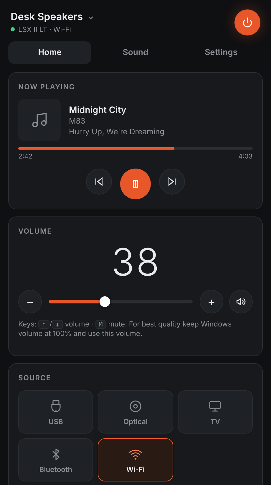
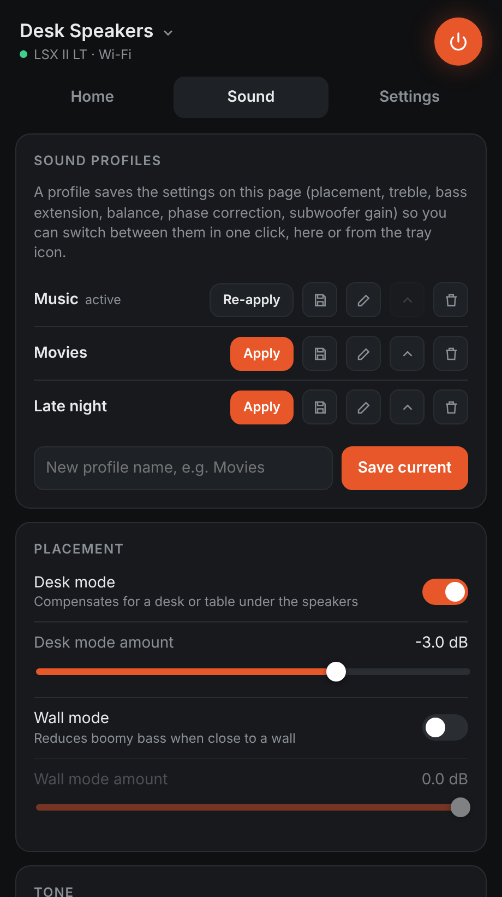
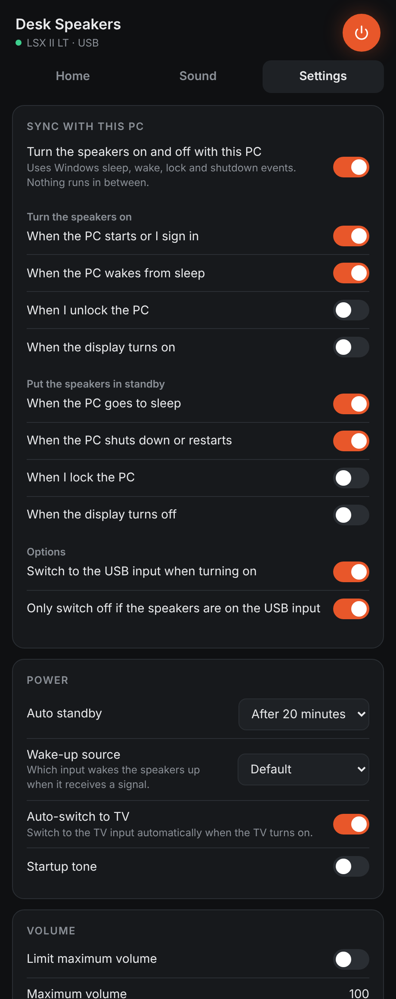

KEF Control is a free Windows app for the KEF LSX II, LSX II LT, LS50 Wireless II and LS60. It's a desktop alternative to KEF Connect, so you can change volume, inputs and every sound setting without picking up your phone.
Version 1.3.2 · about 16 MB · no admin rights or account needed

Made for people who use their KEF speakers with a computer. It lives in the Windows tray and stays out of the way until you need it.
Slider, mouse wheel, arrow keys and mute. Switch between USB, Optical, TV, Bluetooth and Wi-Fi in one click.
Desk mode, wall mode, treble trim, bass extension, balance, phase correction and subwoofer settings.
Save setups like "Music", "Movies" and "Late night", then switch from the app or the tray icon.
Speakers wake when the PC starts or wakes, and go to standby when it sleeps or shuts down. Bluetooth listening is never cut off.
Track, artist, album art and play/pause/skip when you stream to the speakers over Wi-Fi or Bluetooth.
Save several pairs, say desk and living room, and switch between them. Auto-reconnects if their IP address changes.
Follows your Windows light or dark theme.


KEF Connect is made for phones and tablets. KEF Control is made for the PC on your desk.
| Feature | KEF Control (Windows) | KEF Connect (phone) |
|---|---|---|
| Runs on Windows | ✓ | – |
| Volume, inputs, sound settings | ✓ | ✓ |
| Tray icon with quick controls | ✓ | – |
| Turn on/off with your PC | ✓ | – |
| No account needed | ✓ | – |
| First-time Wi-Fi setup, firmware updates, music streaming | – | ✓ |
Uninstall any time from Settings → Apps → Installed apps → KEF Control.
KEF doesn't make a Windows version of KEF Connect. KEF Control is a free, unofficial desktop app that controls KEF W2 speakers (LSX II, LSX II LT, LS50 Wireless II, LS60, XIO, LS LUXE) from your PC over your home network.
No. The USB-C port on the LSX II and LSX II LT is a USB sound card for audio only. Settings and volume are controlled over Wi-Fi, which is how KEF Connect works too. Set up Wi-Fi once in KEF Connect, then use KEF Control on your PC.
Windows volume and the speaker's own volume are separate. For the best sound, keep Windows at 100% and change the speaker volume in KEF Control, from the tray icon, or with the remote.
Yes. KEF Control can turn the speakers on when the PC starts or wakes and put them in standby when the PC sleeps or shuts down. It leaves them alone if you're playing from another input such as Bluetooth.
Speakers on KEF's W2 platform: LSX II, LSX II LT, LS50 Wireless II, LS60 Wireless, XIO and LS LUXE. The first-generation LSX and LS50 Wireless aren't supported.
Yes. It's free and open source under the MIT license. It only talks to your speakers on your local network and, if enabled, checks GitHub once a day for updates. No account, ads or tracking. You can read every line of the source code.
Open Settings → App → Copy diagnostics in KEF Control, then report the problem on GitHub and paste them in.